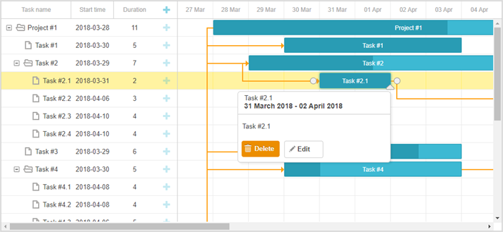
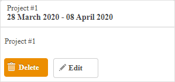
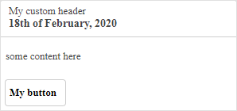
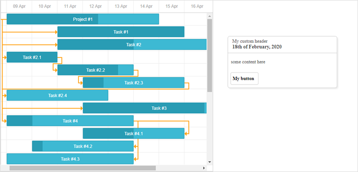

The library includes the quick_info.js extension that allows displaying a popup with details about the task when a user touches the task on the screen.
This functionality requires Touch Support to be enabled.

Related sample: QuickInfo extension
To start using the extension, enable the "Quick Info" plugin using the gantt.plugins method.
gantt.plugins({
quick_info: true
});
The Quick Info extension provides a set of API that allows you to manipulate the settings of Quick Info, to control its behavior or modify the appearance of a popup.
You may use either the API of the gantt.ext.quickInfo object or public API of dhtmlxGantt that is listed below:
Methods
Events
Properties
Templates
The default behavior of the quick_info.js extension implies that the popup will appear over a selected task automatically.
Starting from v7.0, the functionality of the Quick Info is extended; the gantt.ext.quickInfo object, that provides methods for control of the popup manually, is added.
The methods available via the gantt.ext.quickInfo object are:
You can show the popup for a specified task, link, resource panel or define another position on the screen where the popup will be displayed via the gantt.ext.quickInfo.show() method:
// show the popup for the specified task
var task = gantt.getTask(10);
gantt.ext.quickInfo.show(task.id);
// show the popup at specific coordinates
gantt.ext.quickInfo.show(100, 200);
An example of how to show the popup for a resource is given below:
const quickInfo = gantt.ext.quickInfo;
gantt.attachEvent("onGanttReady", function(){
quickInfo.setContainer(document.body);
})
gantt.attachEvent("onEmptyClick", function (e) {
const domHelpers = gantt.utils.dom;
const resourceElement = domHelpers.closest(e.target, "[data-resource-id]");
if(resourceElement){
const resourceId = resourceElement.getAttribute("data-resource-id");
const resource = gantt.$resourcesStore.getItem(resourceId);
const position = resourceElement.getBoundingClientRect();
quickInfo.show(position.right, position.top);
const assignedTasks = gantt.getResourceAssignments(resourceId).map(function(assign){
return gantt.getTask(assign.task_id).text;
});
quickInfo.setContent({
header: {
title: resource.text,
date: ""
},
content: "Assigned tasks: " + assignedTasks.join(", "),
buttons: []
});
}
});
And here is an example of showing the popup for a specified link:
const quickInfo = gantt.ext.quickInfo;
gantt.attachEvent("onLinkClick", function(id,e){
//any custom logic here
const link = gantt.getLink(id);
const linksFormatter = gantt.ext.formatters.linkFormatter();
const domHelpers = gantt.utils.dom;
const position = domHelpers.getRelativeEventPosition(e, gantt.$task_data);
const sourceTask = gantt.getTask(link.source);
const targetTask = gantt.getTask(link.target);
quickInfo.show(position.x, position.y);
let linkDescr = "";
if (link.type === gantt.config.links.start_to_start){
linkDescr = "Start to start";
} else if (link.type === gantt.config.links.start_to_finish){
linkDescr = "Start to finish";
} else if (link.type === gantt.config.links.finish_to_finish){
linkDescr = "Finish to Finish";
} else {
linkDescr = "Finish to start";
}
quickInfo.setContent({
header: {
title: `${linkDescr} link`,
date: ""
},
content: `Source: ${sourceTask.text}<br>
Target: ${targetTask.text}`,
buttons: []
});
});
To hide a pop-up edit form, make use of the gantt.ext.quickInfo.hide() method. The method depends on the gantt.config.quick_info_detached config and presupposes two possible options:
gantt.config.quick_info_detached = false;
gantt.init("gantt_here");
// hide the popup after a short animation
gantt.ext.quickInfo.hide();
gantt.config.quick_info_detached = false;
gantt.init("gantt_here");
// hide the popup immediately
gantt.ext.quickInfo.hide(true);
Note, that if the gantt.config.quick_info_detached config is set to true, the method will always hide the popup immediately.
By default, a quick info popup contain a title, date, content, buttons and looks like this:

In case you want to change the appearance of the pop-up edit form or create a custom one, you may define the desired HTML content via the gantt.ext.quickInfo.setContent() method:
gantt.locale.labels.custom_button = "My button"
gantt.ext.quickInfo.setContent({
header:{
title: "My custom header",
date: "18th of February, 2020"
},
content: "some content here",
buttons: ["custom_button"]
})
As a result, the following quick info popup will appear on the page:

You can use the gantt.ext.quickInfo.setContainer() method to make the quick info popup to be displayed in a custom container:
const quickInfo = gantt.ext.quickInfo;
quickInfo.setContainer(document.body); gantt.ext.quickInfo.show(1300,100);
gantt.locale.labels.custom_button = "My button"
gantt.ext.quickInfo.setContent({
header:{
title: "My custom header",
date: "18th of February, 2020"
},
content: "some content here",
buttons: ["custom_button"]
});
Now, the pop-up with custom content will be rendered in document.body outside the container of Gantt:

Back to top